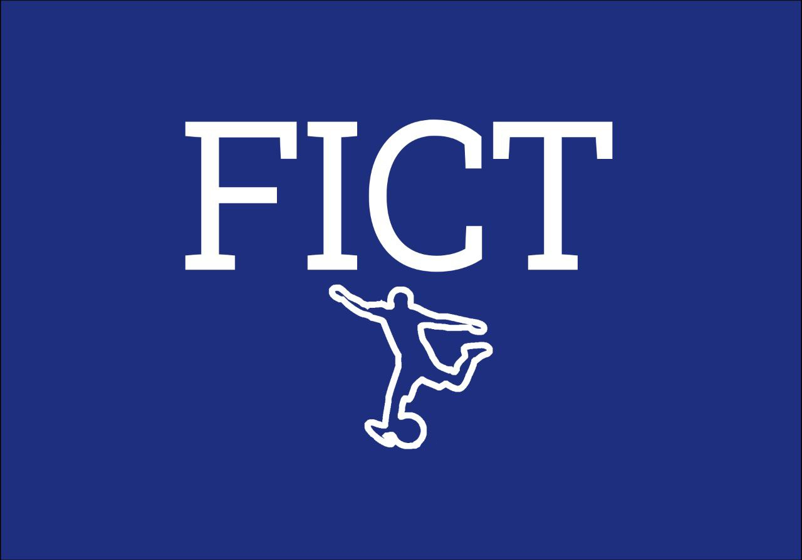

Официальный сайт Международного Футбольного Комитета Титалита


На стадионе Заря-АРЕНА проводятся последние ремонтные работы после долгого расследования террористического акта 16 августа 2024 года во время футбольного матча РЕСПУБЛИКА РУССИЯ - КОРОЛЕВСТВО ВЕЛЬТАНИЯ
 Ремонтные работы на стадионе Заря-АРЕНА в Колскве на стадии завершения. 16 августа 2024 года произошёл террористический акт, в результате которого было ранено 29 человек и пострадала немалая часть здания. Террористы, являющиеся сторониками группы "Новый Завет" во время терракта подожгли трибуну 14А, в результате чего кровля той части полностью сгорела.
Но уже сегодня на официальном сайте Заря-АРЕНА объявили о будущем открытии стадиона в Марте 2025 года после длительного ремонта.
Ремонтные работы на стадионе Заря-АРЕНА в Колскве на стадии завершения. 16 августа 2024 года произошёл террористический акт, в результате которого было ранено 29 человек и пострадала немалая часть здания. Террористы, являющиеся сторониками группы "Новый Завет" во время терракта подожгли трибуну 14А, в результате чего кровля той части полностью сгорела.
Но уже сегодня на официальном сайте Заря-АРЕНА объявили о будущем открытии стадиона в Марте 2025 года после длительного ремонта.